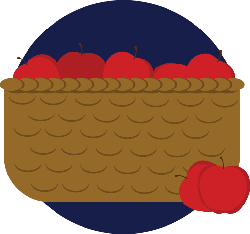
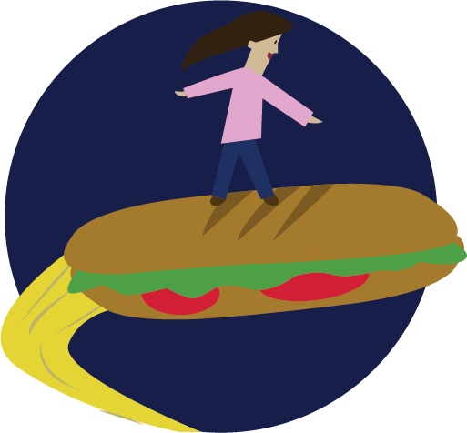
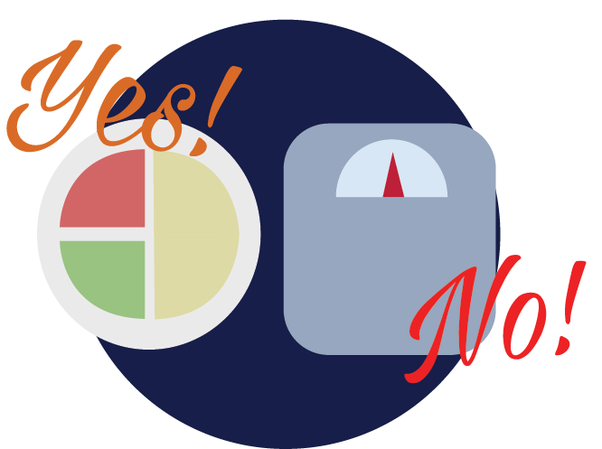

Ingredients that are from the farmer's markets
reassures the foodies that what they eat is
fresh and prices paid for it will support the
local business.

Foodies crave to have their sense stimulated
when eating food. Latest food trends and
exciting food experiences will provide that
sense of adventure that they are looking for.

Foodies care about eating right than checking
for weight loss. Hence, they mostly choose to
eat food of natural ingredients than food with
reduced fat.

These people also like to educate themselves
and learn from the restaurants on how they
plan, prepare and present the food.
Foodies like eating at those restaurants who
consider on where the food is sourced and
how they are grown in a way that is not to be
wasteful to the environment.
Prefers local ingredients
Food is an experience
Organic vs Low-calorie